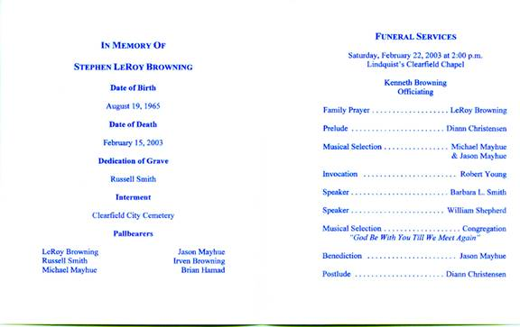
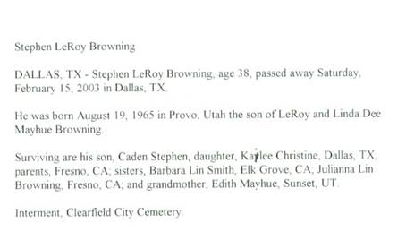
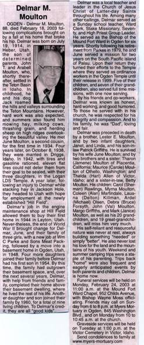

Saturday, February 1, 2003
It was a normal Saturday morning as we got up to start the day. While I took a shower, Tyler had Grandma Play games with him. Shauna started breakfast, Mae went to take a shower and though I played with Tyler, he soon wanted to watch TV. Shauna turned it on and saw a news bulletin that the Space Shuttle Columbia had just exploded as it re-entered the atmosphere, all aboard of course are gone. We watched the reports as they came in most of the morning. Mae played "Mother May I" with Tyler & Emily quite a bit and it was fun to see how she & the children enjoyed it. We said our goodbye's with tears in our eyes and left for home at 2:45 PM. We stopped at Target and bought a wedding gift for Joey and Stephanie Maurer. We selected an Iron that was on a display priced $9.99, but when it rang up, it was $19.99. Mae asked the clerk about the price and said we would select another, but the clerk said, "No" and changed the price to the display price. That is good public relations. I hope people don't take advantage of it. As we traveled home Mae had us study the Tagalog language. By the time we got to Inkom, my head was hurting and I was frustrated. Mae recognized the frustration and she became frustrated for she doesn't know how to help me and I don't either. It became tense for a while, but we talked about it. Though we didn't come to a solution, we got over any bad feelings. We got home after 6 PM, hurried to change clothes and went to the Reception. It was a nice reception, and we enjoyed visiting with many we know. Most of the conversations turned to our Mission Call. We set a date to attend the Temple and go out to eat with Keith and Kathleen Nelson. After leaving the reception, we stopped at the grocery store, then at Artic Circle for a fish sandwich. We were late getting to bed but it has been a good day. I sure have a special Sweetheart.
Sunday, February 2, 2003
We slept in until after 8 AM, then Mae did some typing on Mom Jensen's history and I caught my journal up. Bob came down and invited us to dinner after Church. Mae called Shellie to see how they are doing. Jase is being a hand full for her as he is getting into more things, breaking items and writing on walls and furniture. I told her to be grateful she can still put him to bed at nights. Time went by so fast that we had to hurry to be ready for our appointment with the Stake Presidency. However when we got to the Stake office, it was locked. We tried to call Brother Laprevote, but he is out of town. We finally went to our meetings. Special Fasting and Prayers are being offered for Lorin Davis and Candace Tesch, both having extreme medical problems. Many friends talked to us about our Mission Call. Sister Maggie Klass gave us two figurines made by Billy, one small ceramic figurine of Christ and the other glassed ceramic figurine of a couple. He wanted us to have them, in expression of our friendship, and in appreciation for a book we had given him at the time of his Fathers passing, friends are great! We stopped at Scott's for a minute to say Hi! Kylan is so excited to have us come and Ashley is getting to enjoy us holding her also. We are so blessed with a neat Family. We ate a nice chicken and noodle dinner with Bob and Carroll. This evening Mae and I continued working on personal histories. It is nice having two computers, so we can both be typing at the same time. Jeff and Gale came over for a few minutes, to visit and sign some insurance papers. We continued working on our histories until it was after mid-night when we went to bed. It is sure nice being retired, although our calendar is sure full of things to do and places to go.
Monday, February 3, 2003
It is nice to be able to sleep in and not feel the pressure of being at a job on time. I am sure we will need to have a little tighter schedule when we get on our mission. When we did get up, we got busy and didn't stop to eat breakfast until around 10 AM. I wrote a letter to President Brimhall in response to his phone call, then used Mark's computer and sent the letter by E-mail. Mae and I went shopping for items we need to take with us on our mission. We thought we were well organized but still had some confusion. We went into Riverdale, where we bought a new set of hair clippers.
We came back to Inkley's and arranged for family pictures to be taken just before Jeff & Gale's Wedding Breakfast. We drove over to Kaysville, to check with Joanne's Restaurant about taking the pictures there, and found that it was closed. I went to leave, but Mae asked me to drive around back, just to see if anyone was in the office, but we found no one. I was going to leave, but Mae said that there was a light in there. I told her that it was just a “night light”, but she insisted so reluctantly I stopped and she jumped out of the car and checked the door, but found it was locked. A car, which had just drove into the parking lot stopped and a lady asked us if we had a Banquet scheduled there? When Mae said that we have a Wedding Breakfast scheduled, the lady said that Joanne has lost her restaurant, and that she (this lady) would be the new manager. She said that Joanne had taken the banquet schedule with her and would not let them know who had scheduled the banquet rooms. This lady said she would call us tomorrow so we can reschedule with her. We were sure glad that we had gone over there. We were just totally amazed at how the timing of everything could possibly have worked out so that she was able to see us in the parking lot and felt that she should stop and ask us, and that we were only in the parking lot because Mae felt impressed that we should be there. We felt that there had to have been some intervention because had we not followed Mae’s impressions and had the woman not had the impression to drive down and check the building, we would have never made those connections and on Jeff and Gail’s wedding day, we would have arrived there and there would have been no preparations for the wedding breakfast. We don’t know what we would have done. We know the Lord loves his children, and since Jeff and Gail were getting married in the temple, he wanted them to have a special day. We were sure glad that we had gone over there.
We did other shopping for Mae a dress for the wedding, white shirts, socks, belt, bras, nylons, western boots and other miscellaneous items. We stopped and got a fish sandwich for dinner, and on the way home bought a frozen yogurt. It was sure fun shopping with Mae. We got home about 11 PM. (Modified Oct. 26, 2004 – before sending this to Gail for her scrapbook)
Tuesday, February 4, 2003
We got up at 8 AM and I wrote in my journal, and then transferred data to our palm pilot. Bob came down and visited for a few minutes. We were late getting breakfast and had to rush to be ready for our lesson in Tagalog. Because Mae has an appointment for her and Mishelle at 1:00 PM, Brother Black moved his schedule up to 11:30 AM. While Mae and Mishelle were gone, I tended Kylan. He cried when Mishelle left, but soon settled down and we had a good time. Mae and Mishelle had gone to meet with Jennie Porter, trying to see if she can help Mishelle with her many health problems. Jennie at least gave Mishelle some hope. They were gone until after 3 PM. I tried to call Joanne's Restaurant but the phones are disconnected. We drove over to Kaysville before going to our appointment at the Stake Presidents office and talked to the new manager of Joanne's, she said that she hadn't called us because she won't have phone service until Friday. We got ever thing scheduled for the Wedding Breakfast. President Craven gave me a Priesthood Blessing, and then Brother Stratton, a High Councilman, gave Mae a Priesthood Blessing. Both Blessings were very appropriate and reminded us of the Love Our Father has for us. We were told that we would be guided to accomplish the work we are assigned to do. President Craven also felt impressed to share with us a scripture, D & C 101:1-5. He counseled us to put our names in place of Joseph and Sidney. Both blessings confirmed things we are aware of. I think I especially need to work harder and have more Faith. After returning home, we got something to eat, called and visited with June Moulton, then watched two shows of "JAG" that Bob had recorded for us. We started to watch another show, but decided it was too late.
Wednesday, February 5, 2003
I took extra time entering my journal entry due to unfamiliarity's with this computer. We received and made many phone calls this morning. We received an E-mail from President Grant Brimhall, in response to the E-mail I sent to him on Monday. It was really good to receive his welcome and answer to some questions. I balanced our bank statement and that wasn't too good, we are going through money to fast. I am not sure where the time went, but the day went by fast. Both Mae and I got treatments from Randy. We were late getting to bed, just trying to get organized.
Thursday, February 6, 2003
We were up early in order to be at the Doctors for an appointment by 9 AM. We met with Dr. Jacobson to set up appointments for Colon tests, and then went to Dr. Lee's office, where Mae got some of her mission shots. Next we went to Dr. Bennett's and both got treatments. We went to Inkle's and exchanged our camera case for a smaller one, then to Bath Bed & Beyond and got a wedding shower gift for Gale. We ate a Big Whooper for lunch as we drove, and got home in time for our lesson in Tagalog. We then met Keith and Kathleen Nelson at Chuck-A-Rama for dinner. We then went with them to the Ogden Temple and attended a Session. It was a long and fast day, but we enjoyed it. Mae stayed up late working on various items, but I was had so went to bed.
Friday, February 7, 2003
I woke at 1:30 AM and couldn't sleep, so got up and wrote a letter to Larry. I don't know if I will ever send it or not. It was after 6 AM when I finished and tried to go back to bed. Mae let me sleep, but I only slept a couple of hours. We got some things done around the house. I made some calls, adjusted the sensor on Bob's back porch light. David called and is concerned for our safety with us going to the Philippines. From the news reports, the United States is now on "orange" alert concerning the possibilities of a Terrorist attack. Both the Middle East and North Korea are real problems now and war could break out at any time. He also has a friend that he works with, that ask one of the Dr. that he called on, what he thought of the news. The Dr. asks him if he really wanted to know. When he said he did, the Dr. said he thought it is the End of the World starting. He showed him through scripture just why he thought that. I had to tell David that I agreed, and that if it is, I can't think of a better thing to be doing than the Lords work. We talked for several minutes. He is sure sweet to call us, and I appreciate his concern for us and our safety. Mae called our daughters and daughters-in-laws to talk to them about the color coordination for Jeff and Gale's Wedding Reception. They are ok with it, so I had better keep quiet and calm about it. I wish that I hadn't said any thing last night about the flowers and dresses. This afternoon Mae took the car and went shopping for the Shower she is giving tomorrow. I used the pickup and took the V.C.R. over to Mishelle's so Kylan could watch a video and she could get some rest. I then went to Dr. Bennett's for another treatment, picked up a gas additive for the storing of our vehicles, returned the pajamas I had bought at J. C. Penney's and ordered two other pair, checked with Radio Shack on a surge protector, then went to Tuxedo Junction to be measured for a Tuxedo, from there I stopped at the shoe store to get my boots repaired. It was after 6 PM before I got home. Mae had dinner prepared when I got home. We watched a show on TV, but Mae kept busy as normal, preparing got Gail's shower tomorrow.
Saturday, February 8, 2003
Mae was up early getting ready for the shower. She let me sleep in a little longer, but I woke shortly after 8 AM. I was able to help her get the car loaded. I stopped to check with Bob about the light. It seems to be working better now. I ate then got the dishes done. Scott came over to help me reinstall our scanner. I had planned on scanning the pictures that Mae had assembled of her Mother's, but we spent most of the day, until Scott finally had to take Kylan home. I continued with out success until Mae came home. We then went to Tooele to attend a 45th wedding anniversary for Tom and Karen Egglund. We really enjoyed visiting with several of our old friends from Erda. We took some pictures, so when we got home; we transferred them to our computer. Mae was very tired after the busy day she had. I worry about her and the speed that she keeps going.
Sunday, February 9, 2003
We slept in thinking we had plenty of time, but time goes fast, plus I got a call asking that I be at the church at 11:45 AM to meet with the Bishop. Mae prepared dinner and but it on to cook at Scot's. Meetings were very good and we enjoyed the block. Jeff and Gail came over to Scott's also for dinner. After dinner we played games for a while. Jeff & Gail had to go over to their home to prepare for the Single Adult's to come this evening for their Ward prayer. Mae and I stopped over to their place for a few minutes to see how they were doing. They are sure starting out married life with some nice things. Gail has been preparing for marriage even before she completed High School. She has also had several showers and received many nice gifts. We left when several guests started arriving. We thought we could get to bed early, but it was late as normal. I had a bad headache so slept in the recliner tonight.
Monday, February 10, 2003
We were going to get away early this morning but enjoyed cuddeling up and loving. We stopped on the way to Mike's and left my boots to be resoled, also stopped at the Credit Union in Bountiful and closed out the Browning Family account and our savings account. It was 12:30 PM when we got to Mike's. I repaired the plumbing to the tub in the upstairs bathroom. This evening was mainly taken up by Mike helping Mae and I learn how to scan photos.
Tuesday, February 11, 2003
We enjoyed being with Mike's family. I patched the ceiling in David's room and taped it in. At 1 PM Brother Black called and we took our lesson in Tagalog. After our lesson, I scanned some pictures into Mike's computer. After Mike got home from work, he & I went to the bank, where I added Mike onto our checking account. We then drove to Provo and bought me a photo shop program. Mike, Becky, Mae and I played a game and visited this evening. At 11 PM we let Mike & Becky go to bed. Mae and I worked on scanning pictures until after mid-night.
Wednesday, February 12, 2003
I returned the photo shop program that I bought last night and got the Adobe Photoshop program. It was more money but a better system. I put another coat of mud on the ceiling patch and worked a lot on scanning photographs. When Mike got home from work, he loaded my new program into my computer. This evening Mae tended the children, so Mike and Becky could go out for the evening. I textured the ceiling and worked on more photos.
Thursday, February 13, 2003
Most of this morning was spent in preparing for our lesson. At 1 PM Brother Black called and we were with him for the next two hours. I am beat by the time we finish. Although I am leaning, I feel so far behind. Mae and I decided to scan the Porter family pictures in by the page for now, and then we will go back and edit them when we have more time. Mike helped me organize our lap top computer. Mike then burned a CD with the pictures that I had copied to this point. This evening we played two games of "Settlers", the second one I won. Out of the six or eight times we have played that game, this is the first time I have won.
Friday, February 14, 2003
We enjoyed having breakfast with Mike and the family. After Mike left for work and David & Taylor left for school, Mae and I packed and came home. We stopped in Centerville and purchased some sugarless candy for me, then at Mary's Health store and got the thongs I had ordered. We also mailed a picture to Terry for his birthday, and then picked up two movies to watch this evening and tomorrow evening.
Saturday, February 15, 2003
We got up early so we could go with Bob, Carroll & Mark to Logan where we attended a session at the Temple, then were with Bruce and Micheline as they were sealed as husband and wife for time and All Eternity. After pictures were taken in front of the Temple, then all family members were invited to a lunch at the Golden Corral. It was a great time and we sure enjoyed being with the family. After getting home Mae and I worked on the two computers with up dating our name and address fills and I designed some flip cards for our Tagalog memorization. We were going to do some sopping this evening but were tired so just stayed home.
Sunday, February 16, 2003
We got up thinking that we had a leisure morning to get some studding done, when Roy called to inform us that when they arrived at Linda's mothers last night, they were told that their son Steve had died. That was quite a shock to them. We felt like we needed to let all of our children know, so we called all of them. Bob came down and we talked to him. The morning sure went by fast and before we know it, it was time to go to church. Meetings went well and I think my lesson in Priesthood went ok. We went over to Visit Teach and Home Teach Vicky Hall and Lori, also helped Vicky with a recording she is making. From there we stopped at Crystal Lowery to return the name cards for some Family Research that I did the endowments for. We came home thinking we had the rest of the evening to do things, when Roy called and ask if they could come over. We were just preparing dinner so invited them to eat with us. Irven called and ask if they could come also. We just added some more potatoes to the pot and made plenty of gravy, then enjoyed the evening with them. After they left, I transferred the photos from our camera to our computer. It was after min-night when we got to bed.
Monday, February 17, 2003
Most of today was spent on our computers; Mae worked mainly on training materials for the Tagalog language. I spent my time mainly scanning pictures. This evening we went Home Teaching to Billie & Maggie Klass. We were there for two hours, including Maggie fed us supper. That's a record long time for H.T. We did enjoy the visit and they are good friends. They gave us a Statue of Christ to give to Jeff & Gail for there wedding. We also did some shopping for blouses for the girls, but didn't find anything. We did more on the computers after getting home. We were late getting to bed.
Tuesday, February 18, 2003
This morning I fixed breakfast while Mae cleaned house. I then got on the phone for over two hours, checking on our baggage and medications we need to take with us. That was not very successful. I sent an E-mail to Sister Clark, using Mark's internet. That takes longer, for Mark likes to visit and I enjoy visiting with him. I got more pictures scanned into the computer. Colleen Forsyth (maiden name Moulton) called me to let us know that DelMar had fallen a week ago and was now in a nursing home and not doing well. We drove over to see him and though I don't know if he knows we were there, we were able to visit with Sister Moulton and some of their children. We went to the Bountiful Temple and were able to go through the session with Juliann, Roy and Linda. After the session we were invited to stop at Linda's cousin for desert. We left there and went to Jennie Porter's to get some items. Every where we go, Mae is studding our Tagalog Language and I feel the pressure continually.
Wednesday, February 19, 2003
I didn't sleep very well, so Mae let me sleep until 7:45 AM. We have had several phone calls this morning. Colleen called to let us know that DelMar passed away at 9 PM last night. I am so glad that we took the time to stop over yesterday. Mae gave me a hair cut after we ate breakfast. I called Larry Braithwaite to let them know of Delmar's passing. Mae left at 11 AM to attend a Dr. Appointment and do several other items. I did the dishes and de-boned a chicken that Mae had cooked the other day. Bob brought Cole down for me to tend for a few minutes. He had to take Carroll into the hospital with heart problems. Sherrie came in just a few minutes and got him. I studied for our lesson and got prepared for that, then took a short nap that was interrupted three times by phone calls. Mae was a few minutes late for our tutoring lesson, so Brother Black and I got started with out her. She came just as we were ready to have a prayer. I got ready to meet with Ed Sorenson to prepare our income tax forms and was going to run a couple of other errors but Mae wanted me to put up my computer. I finished scanning Mom Porter's pictures into our computer. Roy, Shellie and the boys came just as I was finishing up. I went over to Ed's, but he was late getting home. Some how his wife had made a mistake in his schedule and I think Scott missed out on his appointment with Ed. Dinner was ready when I got home. Garrett bought a new Palm Pilot, so he and I did some comparing and trading of programs. I am amazed at the abilities these kids have with computers. Time passed to quickly and we were late getting to bed.
Thursday, February 20, 2003
We were up at 6 AM to be ready and at the Salt Lake Temple at 9 AM. Jeff and Gale got there a few minutes later. Gale's Uncle and I were witnesses to the marriage. Elder Halverson was the Sealer that performed the marriage and he did a beautiful job with very good advice and insight as to the covenants entered into with the marriage covenant. The other thing that was so special was that we had all of our children and their companions in there. There were a total of 56 people in attendance. After the wedding we went out for pictures on the Temple Grounds, then we held a Wedding Breakfast at the Kayscreek Banquet Center, and that went very well. We were served Corn on Blue with baked potato, vegetable and carrot cake for desert. The food was served hot and in a timely manor. After the concerns we have had with the arrangements of this dinner, we were much relived at the way it turned out. We had 110 family and friends attend the Breakfast. We had a photographer from Inkle's Photo come there and take Family pictures for our family. The Bride & Groom didn't get there until 2 PM so we started the dinner and had the photographer come back to finish after we ate. We had time to go home and relax for just a few minutes, then went to the Snowcreek Chapel for more pictures and at 6 PM friends and family came to a reception. We had a continual line of people coming through until 9:15 PM. We stopped the line, about 8 PM, long enough for Chelci to sing two songs for the Bride & Groom. The Bride & Groom then cut the cake and the Bride tossed the Bouquet. Jeff, Gale, Mae & I watched their wedding video. Mae & I hauled a load of gifts to Jeff & Gale's home, Marcille and Gale's brother also brought a load each over. It was after 11 PM when we finished getting all the gifts into their home. Mae & I stopped at Taco Time for something to eat before we went home. Roy & Shellie had just got the boys to bed when we got home. Our children had all gone to Scott & Mishelle's to visit and play games. We were up for another hour visiting before going to bed.
Friday, February 21, 2003
Roy, Shellie and Garrett went skiing at Powder Mountain this morning. Mae went to Dr. Bennett's this morning, and then did some other errands. I tended the younger boys while she was gone. This afternoon I took Jeff and my tuxes back, washed Jeff's car, bought cards and flowers for Steven Browning and Delmar Moulton's funerals. This evening Roy, Shellie, Mae & I went to Salt Lake where we met Mike and Becky at the Black Angus, for dinner. We enjoyed being together and visiting. We sure feel blessed with our family.
Saturday, February 22, 2003
All of our family, except Jeff & Gale, came for breakfast. Bob prepared biscuits for us and I made gravy and eggs. Mike had prepared a slide show of Jeff & Gale's wedding and showed it to us. He also helped me burn a CD of the Porter pictures that I have scanned. Sandi had us play a game together as a family. A paper shopping bag was placed on the floor and each person had to bend down, not allowing hands or knees to touch the floor, and pickup the bag with his mouth. After each had done this, a couple of inches would be cut off the bag and the next round would start. I was eliminated on the second round. Roy, Brad and Sandi stayed in until there was less than 1/2 inch left. Chelci was still in, so Brad took a $5.00 bill and placed it on the floor and challenged Chelci that she could have it if she could pick it up, and she did. I left at 1 PM to attend Steven LeRoy Browning's viewing. Mae, Sandi, Shellie & Roy, Mike, David and Scott came up before the Funeral. Roy and Linda ask me to conduct the services.
After the Services, we again gathered with our Family and had lunch. This evening Mae gave birthday gifts to all of our grandchildren, as we will be gone for the next two years. We sure enjoy our family. By 8 PM all of them had left for home. Mae and I then cleaned up the house. Roy & Linda came over about 9:30 PM and visited for a while. Families are special. Mae & I watched JAG, which Bob had recorded for us. I sure love that girl! 

Delmar was the Bishop that I served as First Counselor with while we lived in Ogden. Larry L. Braithwaite was second Counselor and Dale Tines was the Ward Clerk. Bishop Moulton was such a wonderful man and I really enjoyed serving with him.
Sunday, February 23, 2003
We didn't get up early but it seemed that time went so fast. We were working on our computers when Mae asks me what time it was. We were both very surprised when it was 11:45 AM and we had to hurry to get to our meetings. After meetings we stopped at Scott's for a minute then took the Family Goal poster from the Stake to each of our Home Teaching Family. We spent the rest of the afternoon and evening working on our computers. Mae had me scan several more pictures into our computer. It seems that a lot of time can be spent on the computer. We did get an E-mail sent to Brother Black. We received a nice e-mail from Sister Clark of the Philippines Angeles Mission. She said that they have found us a nice home. It was after mid-night when we got to bed.
Monday, February 24, 2003
Mae & I left this morning at 9 AM to get our tax returns. It looks like we will get $2,000 back from Federal and just under $600 from the State. That will sure help. We went over to Nancy's and got some pills for Mae, then went to the Viewing and Funeral for Delmar M. Moulton. Although sad to have him gone, we are happy that he is relieved from the pain he was in the other day when we visited him in the nursing home. His wife and family are comforted in the Gospel of Jesus Christ and the assurance of a Glorious Reunion with him in the future. He was a wonderful man who has lived a good and full life. We had the opportunity to visit with several that we know when we lived there in Ogden, Laura Dixon, Dale & Cora Thinnes, Carol Peterson, Marian Rice and of course all of Delmar's children and their family's. June is doing very well but I doubt if she will be with us very much longer, they were to close as a couple to be separated very long. We came home to change and eat. We worked a little on the computers getting my journal caught up, scanning a few pictures, and preparing some flip cards to help us with the Tagalog language. We went to Tooele and visited with LaDel and Eleanor Brown. We visited and played Rook, at which Mae and LaDel won at over 500 to -290. It was sure a wonderful evening. It snowed this evening so the roads were slippery in some areas as we came home. Mae studied both going and coming. It is amazing to me how she can memorize the Tagalog words and their meaning. The language is what scares me about this mission call for I am not getting it. Everyone keeps telling me that it is because I am telling my self that I cannot memorize or that I just lack confidence, or don't worry for it will come, but what ever the reason, I am not getting it. I was sure tired when we got home.
Tuesday, February 25, 2003
Both Mae and I woke feeling under pressure from all we need to do to be ready to enter the M.T.C. I tried for over an hour to call the Philippines Consult Office in San Francisco; I also tried L.A. and Wash. D.C., before finally reaching a live person. They told me that in order to take our nuturanance into the Philippines with us, I needed a letter signed by a Doctor. Bryce wanted me to come up and talk to him as what he should do to lay tile flooring, lower the ceiling and install new cupboards in their kitchen. I stopped in Sunset trying to find Edith Mayhue's home, but didn't remember the address. I got home in time to take a 10 minute nap before taking our tutoring lesson in Tagalog. Mae and I then went back to Edith's and she let us borrow a picture of Roy's family. I then took Mae to a Dr. Appointment to have her eyes checked. While she was there I went over to Speedy Pack and mailed a bucket of whey to the mission home in the Philippines. I also laminated some sheets for Mae. Mae was ready when I got back to the doctors office. From there we went to Inkley's to see the proofs of our Family Pictures we had taken. We then went to Bowman's and filled some prescriptions for Mae and bought us some fried chicken for dinner. We stopped at Scott's to see if we had large suit case there. We visited a while there, then went to Jeff & Gail's and watched them open their wedding gifts. They got a lot of very nice gifts. They gave both Mae and Marci a bouquet of flowers in appreciation for the Wedding Reception. We enjoyed being with them and seeing how happy they are. It was late but we stayed up and watched TV for a while before going to bed.
Wednesday, February 26, 2003
We were busy all day and time flow quickly. Mae went to lunch with her good friend Jackie. This evening I went over to Kathy Sheffield's and with the help of Brother Hawks, administered to her. She is having attacks of kidney stones. She is pretty sick. I also bought some rubbers for my boots, some down pillows and a set of luggage. I also stopped at the Davis Hospital for my prep kit that I will take tomorrow before going into the hospital on Friday. I was tired when I got home so just quit. I watched "JAG" that Bob recorded for me last Tuesday. Mae kept going until 11 PM when we went to bed.
Thursday, February 27, 2003
I started on the prep kit this morning at 7:30 AM and continued through the day. I really has made me miserable as it cleans you our. We had our Tutoring session, though I had to excuse myself several times. Mae has sure been good with me and felt bad that I had to do this on my Birthday. David and Sandi both called me to wish me a Happy Birthday. Mae bought me a balloon and a frozen yogurt that I have to save until after tomorrow. Terry called to thank Mae for the picture she sent to him as a Birthday Card. She sure enjoyed visiting with him.
Friday, February 28, 2003
We had to be to the Davis North Hospital at 7:30 AM for my colon test. The test it self wasn't too bad. Dr. Johnson removed one small spot but said every thing else was ok. We had to weight a while for the anticsedick to wear off. A nurse that was born in the Philippine came in and talked to us about the area we will be going to. It was really enjoyable visiting with him. We went over to Scott's so we could tend the children while Mishelle went visiting teaching. I really wasn't feeling very well as my system is trying to get reestablished, so I went to sleep. Mae took Kylan with her to get our clothes so we can stay with Scott & Mishelle for the weekend. This evening we made the bed and studied for our lesson tomorrow. We think that as we made the bed, Mae must have stepped on the cord and unplugged the heater to the bed, for when we went to bed, the matter was very cold. We had to sleep on top of the covers to keep warm.